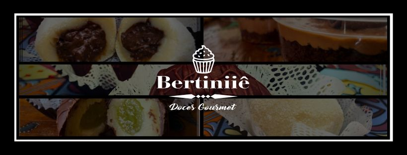
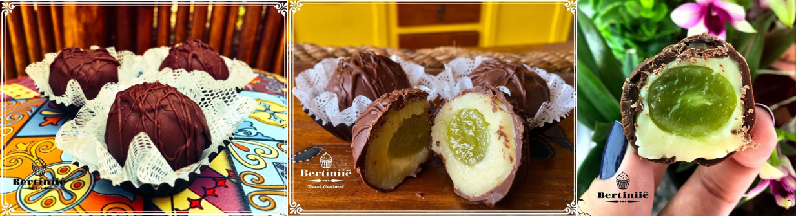
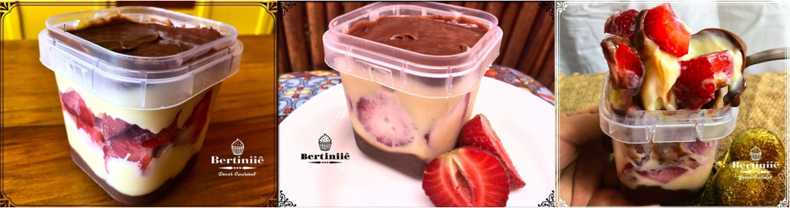

Bertiniiê Doces Gourmet
Descrição do Projeto
A Bertiniiê Doces Gourmet é uma empresa de doces e bolos no pote.
Este projeto de Web Design consiste na criação de um site responsivo e funcional.
O objetivo principal dele é apresentar os produtos da empresa e captar clientes.
⟵Voltar ao portfolio